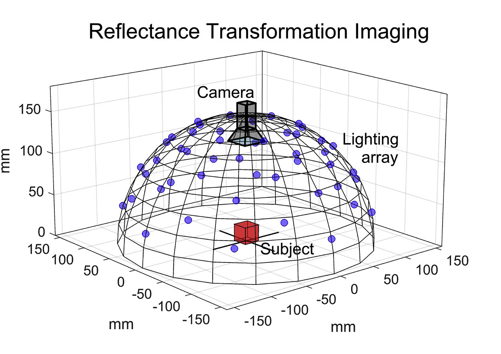
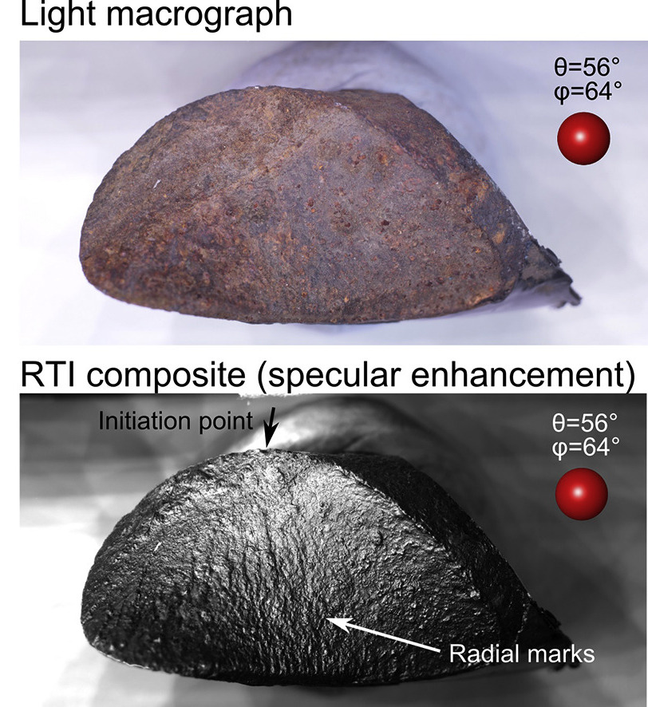

About the Museum
The World Museum has approximately 25 million artifacts and continues to collect hundreds of thousands annually. For cultural and research purposes, the museum has recently tasked PWC to digitise its collection. This website serves as the public access to the database of already-digitised artifacts.
Below are details about the different technqiues:
This technology is particularly useful for examining artifacts, large objects, and historical documents because it allows for detailed analysis without touching the object, reducing the risk of damage. 3D scanning is also cost-effective, requiring only moderate equipment and maintenance. Overall, 3D scanning provides researchers and conservators with a powerful tool to study and preserve valuable items with high precision and low risk.
These images are then merged using specialized software, allowing the subtle textures and features on the object's surface to be highlighted and explored in unprecedented detail, as demonstrated in figure 2.
This technology is particularly valuable for examining cultural artifacts, artworks, and historical documents as it enables detailed analysis without any physical contact with the object, thereby minimizing the risk of damage.
RTI is also cost-effective, requiring only minimal equipment and maintenance. Overall, RTI provides researchers and conservators with a powerful tool for studying and preserving precious items with high precision and low risk.
Digitisation Efforts
As of current, the large and heavy dry objects, and the small dry objects are being digitised through a combination of 3D scanning and reflectance transformation imaging (RTI). These produce accurate digital depictions of the arifacts, that are suitable reference material for scientists and preserves cultural artifacts, making them more readibly accessible.Below are details about the different technqiues:
3D Scanning
3D scanning is an advanced imaging technology that captures the complete three-dimensional shape of an object from multiple angles. This technique involves scanning the object from different perspectives. Then, specialized software integrates this data to create a detailed 3D model, accurately showcasing the object's geometry and details.This technology is particularly useful for examining artifacts, large objects, and historical documents because it allows for detailed analysis without touching the object, reducing the risk of damage. 3D scanning is also cost-effective, requiring only moderate equipment and maintenance. Overall, 3D scanning provides researchers and conservators with a powerful tool to study and preserve valuable items with high precision and low risk.
Reflectance Transformation Imaging
Reflectance Transformation Imaging (RTI) is an advanced photographic technique that captures the fine surface details of objects using multiple lighting angles. This method involves taking a series of photos of an object from a fixed camera position while systematically changing the lighting direction (see figure 1).

Figure 1: The general setup used for RTI, showing the fixed camera angle and multiple lighting directions.
Figure 1: The general setup used for RTI, showing the fixed camera angle and multiple lighting directions.
These images are then merged using specialized software, allowing the subtle textures and features on the object's surface to be highlighted and explored in unprecedented detail, as demonstrated in figure 2.

Figure 2: An RTI photograph showing the high detail capture compared to other photography methods.
Figure 2: An RTI photograph showing the high detail capture compared to other photography methods.
This technology is particularly valuable for examining cultural artifacts, artworks, and historical documents as it enables detailed analysis without any physical contact with the object, thereby minimizing the risk of damage.
RTI is also cost-effective, requiring only minimal equipment and maintenance. Overall, RTI provides researchers and conservators with a powerful tool for studying and preserving precious items with high precision and low risk.